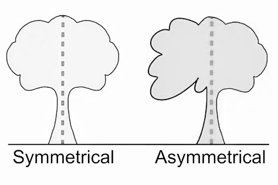

Symmetry
Similar visual weight appears across an axis. Mirroring can support clarity or ceremony, but it does not automatically make an image successful.
KHAEMENES ACADEMY · BAZAAR ART · ART 101
Unit 04 · Composition and Visual Storytelling · Original studio learning
How can an artist distribute visual weight and direct movement without relying on perfect symmetry?
Learning goals: compare symmetrical and asymmetrical balance; analyze scale, contrast and negative space; use repetition and directional cues; test and revise an original composition.
Similar visual weight appears across an axis. Mirroring can support clarity or ceremony, but it does not automatically make an image successful.
Unequal forms can feel balanced: a small, sharply contrasting shape may counter a larger muted one. Test rather than assume visual weight.
Repeated marks, changing intervals, diagonals, edges and implied gaze can suggest a path through the composition. Viewers may follow different paths.
These are simplified original teaching diagrams. Visual balance is an interpretive judgment, not a measurable physical force.
Study the two arrangements in this reference before adjusting the interactive composition laboratory. Identify the central axis, the largest visual masses, and the role of contrast and negative space. Compare how equal and unequal forms can both produce an intentional composition.

Symmetrical: locate the implied axis and compare visual elements on either side. Look for repeated sizes, shapes, values and intervals. Asymmetrical: compare the larger and smaller elements, paying attention to contrast, distance from the center and surrounding empty space. Sketch one revision of each arrangement and explain how the focal point or perceived balance changes.
Study two documented artworks, one with strong symmetry and one with asymmetrical balance. Identify the largest shape, the highest local contrast, repeated marks, and the distribution of negative space. Record creator, title, date, medium and source for each. Distinguish what is visible from inferred intent.
Imagine a large pale vase occupying the left third of a frame and a small dark red apple near the right edge. Predict whether they can feel balanced. Make two thumbnails: in the second, lighten the apple or move it toward the vase. Ask which version directs attention more strongly and explain using size, contrast and spacing.
Move the smaller form, change its size and contrast, and adjust the larger form. Compare at least three arrangements. The dotted center axis is a guide, not a grading rule. Record which arrangement best supports your intended focal path.
Choose a still life, plant arrangement or imagined landscape. Draw three thumbnails: one symmetrical, one asymmetrical and one emphasizing rhythmic movement. Develop your strongest design into a finished drawing, painting, collage or digital composition. Preserve a before-and-after revision.
Ask a reviewer where their attention goes first, second and third. Compare their response with your intent. Save your research citations, three thumbnails, laboratory notes, finished composition, revision and a 120–200 word reflection about the choices that affected balance and movement.
Use the sliders to test whether a small high-contrast shape can counterbalance a larger muted shape. The scene updates live; no external assets or image generation are involved.
This is a browser-local studio record, not an authenticated Academy gradebook. Confirm learner identity before sharing or importing evidence.
Observation and researched context (20) · Three exploratory compositions (20) · Original studio craftsmanship and intentional hierarchy (25) · Revision and critique (20) · Complete portfolio evidence (15). This rubric is reviewed by an educator; it does not automatically grant mastery.
Five randomized questions are drawn from fifteen reviewed-for-structure curriculum items. Four correct answers meet the 80% formative target. Browser-local practice results do not independently authorize the next lesson.
Week 10 will explore visual narrative, sequencing and responsible representation. Complete and preserve this week's studies before continuing.
Return to Unit 04